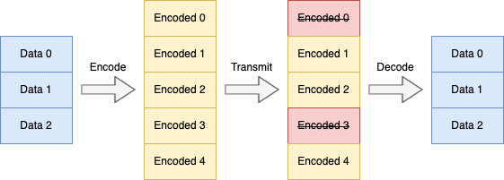
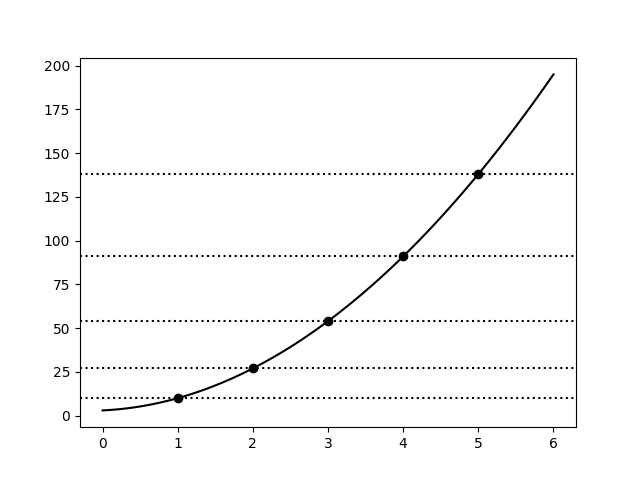

Learn you Galois Fields for Great Good (10)
Navigation | first | previous | next (soon)
Reed-Solomon as Polynomial Representation
This is part 10 of a series on Abstract Algebra. In this part, we'll start exploring Reed-Solomon Erasure Codes.
I originally planned this topic to be a single article, but as I refreshed my own understanding I realized there are multiple ways of viewing Reed-Solomon codes, each with its own merits. Most discussions of the topic approach it from one fixed interpretation. This leads to a lot of confusion.
Since this series is intended as a beginner's guide/survey, I decided it would be helpful to discuss a few different views/interpretations of Reed-Solomon one-at-a-time.
This article presents the first and original interpretation: polynomial evaluation and interpolation.
Motivation for Erasure Coding
In the article on CRC codes, I motivating Coding Theory using the reality of signal noise/corruption. We then built an error-detecting code. However, we didn't discuss how one might develop an error-correcting code. Here we'll do just that!
Consider you have a message to send that can be broken up into 3 data blocks. We'd like to add redundancy blocks and transmit 5 encoded blocks. Suppose we have some way to detect block corruption (e.g. using CRC). If a block is corrupted, we can treat it as not present or erased. And, as long as only some blocks are erased, we want to be able to decode it successfully.
Our scheme looks like this:

Here, 2 arbitrary blocks are erased in transmission, but we can still decode the original data blocks using the remaining 3 encoded blocks. Notice that naive schemes like "send the data twice" or "send a parity block" won't work here.
Instead, we need a special erasure code for this task.
So, how can this be done?
Polynomials
That's right, we can again find the answer with polynomials! And you thought we were done with those... tisk tisk.
The key here is to notice a very important property of polynomials. They can be represented by either n coefficients or as n evaluations.
Consider the 2nd degree polynomial 5x^2 + 2x + 3. We can represent this as the coefficient array [5, 2, 3] (using the monomial basis [x^2, x, 1]).
Plotting this polynomial:

In the graph, we've annotated 5 evaluation points of the polynomial. Let's also enumerate them in a table:
x |
1 |
2 |
3 |
4 |
5 |
|---|---|---|---|---|---|
f(x) |
10 |
27 |
54 |
91 |
138 |
The key property is that we can pick any three of these point evaluations to represent the polynomial uniquely!
This means that all of the following represent the exact same polynomial:
values |
basis |
|---|---|
[5, 2, 3] |
monomial basis: [x^2, x, 1] |
[10, 27, 54] |
evaluation points: [1, 2, 3] |
[54, 91, 138] |
evaluation points: [3, 4, 5] |
[10, 54, 91] |
evaluation points: [1, 3, 4] |
[91, 10, 138] |
evaluation points: [4, 1, 5] |
For each group of three points we choose, there is a set of values that can represent our polynomial. For the real-numbers, this means there are infinitely many possible representations in evaluation form! In general, if we have an nth degree polynomial over the field GF(k), we have $k \choose {n+1}$ possible evaluation representations.
This is the core idea that leads to Reed-Solomon Codes.
Reed-Solomon's Big Idea
The big idea is simply:
- Encoding is polynomial evaluation (from coefficients to evaluations)
- Decoding is polynomial interpolation (from evaluations to coefficients)
Encoding
We start with the 3 data points (or blocks):
[5, 2, 3]
In Reed-Solomon, we immediately treat this data as coefficients of some polynomial. In this case, its the polynomial we plotted above: 5x^2 + 2x + 3
We now evaluate this polynomial at 5 points. These are just the evaluations given above. Thus, our encoded points (blocks) are just:
[10, 27, 54, 91, 138]
It's worth noting that there is an implicit shared vector of the evaluation points used ([1, 2, 3, 4, 5]). Often these are simply hardcoded directly into the encode/decode algorithms and don't need to be transmitted.
This is it for encoding. We simply transmit the above vector and allow any erasures to occur.
Decoding
For decoding, we wish to take any 3 of the 5 evaluations and reconstruct the polynomial coefficients.
Let's use these: [10, 54, 91] (with evaluation points: [1, 3, 4]).
We need to perform polynomial interpolation. Now, typically Lagrange Polynomials as used for this, but these are harder to compute with.
Instead, we'll be using Newton Polynomials to build the polynomial p(x), adding one point at a time.
Let's start with p(1) = 10. This is just the constant function:
p(x) = 10
Now we'll add p(3) = 54 but we need to ensure we retain p(1) = 10.
This looks like:
p(x) = 10 + 22(x - 1)
Here, we cleverly use the (x - 1) factor to ensure the second term is 0 when x = 1.
Exercise: Solve 10 + k(3 - 1) = 54 for k. You should get 22
Exercise: Evaluate 10 + 22(x - 1) for x = 1. You should get 10
Exercise: Evaluate 10 + 22(x - 1) for x = 3. You should get 54
Let's use this trick again to add the next point p(4) = 91:
p(x) = 10 + 22(x - 1) + 5(x - 1)(x - 3)
Notice here that we need to use (x - 1)(x - 3) to cancel both x = 1 and x = 3 for the new term.
Exercise: Solve 10 + 22(4 - 1) + k(4 - 1)(4 - 3) = 91 for k. You should get 5
Exercise: Evaluate 10 + 22(x - 1) + 5(x - 1)(x - 3) for x = 1. You should get 10
Exercise: Evaluate 10 + 22(x - 1) + 5(x - 1)(x - 3) for x = 3. You should get 54
Exercise: Evaluate 10 + 22(x - 1) + 5(x - 1)(x - 3) for x = 4. You should get 91
This is the general procedure for constructing a Newton Polynomial: keep adding terms using (x - k) factors to zero out previous x's
Now, let's expand this polynomial back to monomial form to recover the original constants:
p(x) = 10 + 22(x - 1) + 5(x - 1)(x - 3)
= 10 + 22x - 22 + 5x^2 - 20x + 15
= (5x^2) + (22x - 20x) + (10 - 22 + 15)
= 5x^2 + 2x + 3
Excellent. We've recovered the original data vector: [5, 2, 3].
Similarly, we can recover the coefficients from any subset of 3 points and in any order!
Exercise: Construct the newton polynomial using the evaluations [91, 54, 10] (points: [4, 3, 1]). Convert this to monomial form to recover the coefficients. You should get [5, 2, 3]. Notice: this uses the same points as before but in reversed order.
Exercise: Construct the newton polynomial using the evaluations [10, 27, 54] (points: [1, 2, 3]). Convert this to monomial form to recover the coefficients. You should get [5, 2, 3].
Exercise: Evaluate the polynomial 5x^2 + 2x + 3 at three new points. Then, build a newton polynomial with them and convert to monomial form. You should get [5, 2, 3]. Repeat this exercise until you fully understand decoding.
Implementing Reed-Solomon
We'll now implement Reed-Solomon using this idea of polynomial representations. We will use GF(256) instead of the Real Numbers for the implementation. Using GF(256) allows us to take data bytes (u8) and encode them to other data bytes (u8).
An aside: A fun quirk of this construction is that an element of GF(256) itself can be interpreted as a polynomial. So, we can view Reed-Solomon as polynomials over polynomials over GF(2) 😈. Believe it or not, this is actually a useful observation! It leads to the important Cauchy-Reed-Solomon XOR Codes. We might discuss them in a future article.
Okay, let's get on with coding!
Source Code: src/reed_solomon_poly.rs
use crate::gf_256::GF;
Polynomial Evaluation
First, we need a routine to evaluate polynomials. Our routine will take an array of coefficients and
an evaluation point. We will use Horner's Method
for the algorithm. This allows us to do an evaluation in O(n) time.
fn poly_eval_point(coeffs: &[GF], x: GF) -> GF {
let n = coeffs.len();
let mut result = GF::new(0);
for i in (0..n).rev() {
result = result * x + coeffs[i];
}
result
}
We'll also add a routine to evaluate many points at once. This routine takes O(nm) time
where n is the number of coefficients and m is the number of evaluation points
fn poly_eval(coeffs: &[GF], xs: &[GF]) -> Vec<GF> {
let mut out = vec![];
for x in xs {
out.push(poly_eval_point(coeffs, *x));
}
out
}
Polynomial Interpolation
For polynomial interpolation, we'll recover the coefficients by constructing a Newton Polynomial. But, unlike our practice examples, we'll store all polynomials in monomial form.
Note: this algorithm is a bit tricky. If you don't follow it right away, I'd suggest deriving it yourself directly and comparing results. If you still are having difficulty, it's okay to skim this section. The important parts are: (1) understanding that polynomial interpolation is not magic, and (2) understanding the runtime complexity of the algorithm
Recall that a Newton Polynomial has the form:
p(x) = k0 + k1*(x-x0) + k2*(x-x0)*(x-x1) + k3*(x-x0)*(x-x1)*(x-x2) + ...
For our implementation, we'll maintain two polynomials:
- The
p(x)polynomial constructed so far - The
z(x)polynomial of(x - c)factors so far
We can add new points by combining these polynomials (using a suitable k):
p'(x) = p(x) + k*z(x)
For each new point (xk, yk), we will use the steps:
- Solve for
kwithk = (yk - p(xk))/z(xk) - Update
pwithp = p + k * z - Update
zwithz = z * (x - xk)
We will also maintain the polynomials p(x) and z(x) in monomial coefficient form. This makes them
easy to combine and evaluate. It also means that the final answer is
just p(x) whenever we finish adding new points.
Finally, notice that this algorithm has runtime complexity O(n^2) where n is the number of points
interpolated. This is because the inner loop is O(n) and we're looping over n points.
Okay, let's code it:
fn poly_interpolate(evals: &[GF], xs: &[GF]) -> Vec<GF> {
// Sanity check
assert_eq!(evals.len(), xs.len());
// Initialize our polynomials to p(x) = 0 and z(x) = 1
let n = xs.len();
let mut p = vec![GF::new(0); n];
let mut z = vec![GF::new(0); n];
z[0] = GF::new(1);
// Loop over each point
for i in 0..n {
// Unpack the point for this iteration
let xk = xs[i];
let yk = evals[i];
// Step 1: Solve k = (yk - p(xk)) / z(xk)
let k = (yk - poly_eval_point(&p, xk)) / poly_eval_point(&z, xk);
// Step 2: Update the polynomial: p' = p + k * z
for j in 0..n {
p[j] = p[j] + k * z[j];
}
// Step 3: Update the z polynomial: z' = z * (x - xk)
//
// Let's simplify a bit first by distributing:
// z' = z * x - z * xk
//
// Now notice that multiplying by `x` is a shift of the coefficients.
// This leads to the form we'll use:
// z' = shift(z) - xk * z
//
for j in (1..n).rev() { // update in reverse
z[j] = z[j-1] - xk * z[j];
}
z[0] = GF::new(0) - xk * z[0];
}
// The final result is just `p`
p
}
Reed-Solomon Encoding and Decoding
Now, we'll implement the encoding and decoding functions. First, we'll to define a few parameters:
const K: usize = 3; // Number of data elements (before encoding)
const N: usize = 5; // Number of encoded elements
We also need to specify the evaluation points. We need to have N of these.
For this variant of Reed-Solomon, it really doesn't matter what we pick. They just need to be
distinct elements of GF(256):
const X: [GF; 5] = [
GF::new(42), GF::new(222), GF::new(2), GF::new(8), GF::new(99)
];
The encode routine is just a simple wrapper around polynomial evaluation
pub fn reed_solomon_poly_encode(data: &[GF]) -> Vec<GF> {
// Sanity check
assert_eq!(data.len(), K);
assert_eq!(X.len(), N);
// Just treat the data as if it's polynomial coefficients and evaluate!
poly_eval(data, &X)
}
For decoding, we'll specify presence/erasure using the Option<GF> type. If present, we have Some(x) and otherwise None.
This is not a common way to do it, but it illustrates the idea of erasures very well.
pub fn reed_solomon_poly_decode(encoded: &[Option<GF>]) -> Option<Vec<GF>> {
// Sanity check
assert_eq!(encoded.len(), N);
// First, we need to gather up evaluations that haven't been erased.
let mut evals = vec![];
let mut xs = vec![];
for i in 0..N {
if let Some(value) = encoded[i] {
evals.push(value);
xs.push(X[i]);
}
}
// Make sure we have enough evaluations to decode
if evals.len() < K {
return None; // Too many erasures, can't decode!
}
// Decode it with polynomial interpolation. Note that we only use the
// first K evaluations. The additional evaluations aren't needed (we are
// assuming that non-erased evaluations are "error-free")
let data = poly_interpolate(&evals[..K], &xs[..K]);
// Great success!
Some(data)
}
Testing Time
First, we'll test that polynomial evaluation works correctly:
#[cfg(test)]
#[test]
fn test_poly_eval() {
assert_eq!(poly_eval_point(&[], GF::new(1)), GF::new(0));
assert_eq!(poly_eval_point(&[GF::new(2)], GF::new(2)), GF::new(2));
assert_eq!(poly_eval_point(&[GF::new(2), GF::new(2)], GF::new(3)), GF::new(4));
assert_eq!(poly_eval_point(&[GF::new(46), GF::new(198), GF::new(0), GF::new(89)], GF::new(201)), GF::new(126));
}
And we'll test polynomial interpolation
#[cfg(test)]
#[test]
fn test_poly_interpolate() {
let poly = poly_interpolate(
&[GF::new(21), GF::new(21), GF::new(19)],
&[GF::new(4), GF::new(5), GF::new(6)]
);
assert_eq!(poly, vec![GF::new(1), GF::new(1), GF::new(1)]);
let poly = poly_interpolate(
&[GF::new(57), GF::new(56), GF::new(49)],
&[GF::new(4), GF::new(5), GF::new(6)]
);
assert_eq!(poly, vec![GF::new(1), GF::new(2), GF::new(3)]);
}
We should be able to decode up to 2-element erasures. But, 3-element erasures will fail.
Let's test each possibility.
#[cfg(test)]
fn encode_decode_all(data: &[GF], expected_enc: &[GF]) {
// encode
let enc = reed_solomon_poly_encode(data);
assert_eq!(enc, expected_enc);
let recv_all: Vec<_> = enc.iter().map(|x| Some(*x)).collect();
// decode with no erasures: success!
assert_eq!(reed_solomon_poly_decode(&recv_all), Some(data.to_vec()));
// decode with all one element erasures: success!
for i in 0..N {
let mut recv = recv_all.clone();
recv[i] = None;
assert_eq!(reed_solomon_poly_decode(&recv), Some(data.to_vec()));
}
// decode with all two element erasures: success!
for i in 0..N {
for j in (i+1)..N {
let mut recv = recv_all.clone();
recv[i] = None;
recv[j] = None;
assert_eq!(reed_solomon_poly_decode(&recv), Some(data.to_vec()));
}
}
// decode with all three element erasures: failure!
for i in 0..N {
for j in (i+1)..N {
for k in (j+1)..N {
let mut recv = recv_all.clone();
recv[i] = None;
recv[j] = None;
recv[k] = None;
assert_eq!(reed_solomon_poly_decode(&recv), None);
}
}
}
}
Now we can test a bunch of different data vectors:
#[cfg(test)]
#[test]
fn test_encode_decode() {
// trivial
encode_decode_all(
&[GF::new(0), GF::new(0), GF::new(0)],
&[GF::new(0), GF::new(0), GF::new(0), GF::new(0), GF::new(0)],
);
// ones
encode_decode_all(
&[GF::new(1), GF::new(1), GF::new(1)],
&[GF::new(3), GF::new(161), GF::new(7), GF::new(73), GF::new(160)],
);
// pattern
encode_decode_all(
&[GF::new(100), GF::new(150), GF::new(200)],
&[GF::new(160), GF::new(135), GF::new(94), GF::new(104), GF::new(194)],
);
// random
encode_decode_all(
&[GF::new(216), GF::new(196), GF::new(171)],
&[GF::new(81), GF::new(157), GF::new(209), GF::new(193), GF::new(105)],
);
}
Building and Testing
The above code can be built and tested the normal rust ways:
cargo test
cargo build
Conclusion
In about 60 non-comment lines of code, we have a working Reed-Solomon implementation. It is surprisingly straight-forward. It feels somewhat magical to me that we only need polynomials representations to build these codes. Mathematically, it's simple and elegant.
However, this is a reference implementation. In practice, you won't find these codes implemented at all like this.
In the next article, we'll continue exploring Reed-Solomon codes from a new perspective.
It turns out that we can think about these codes as just some ordinary linear algebra (soon)!